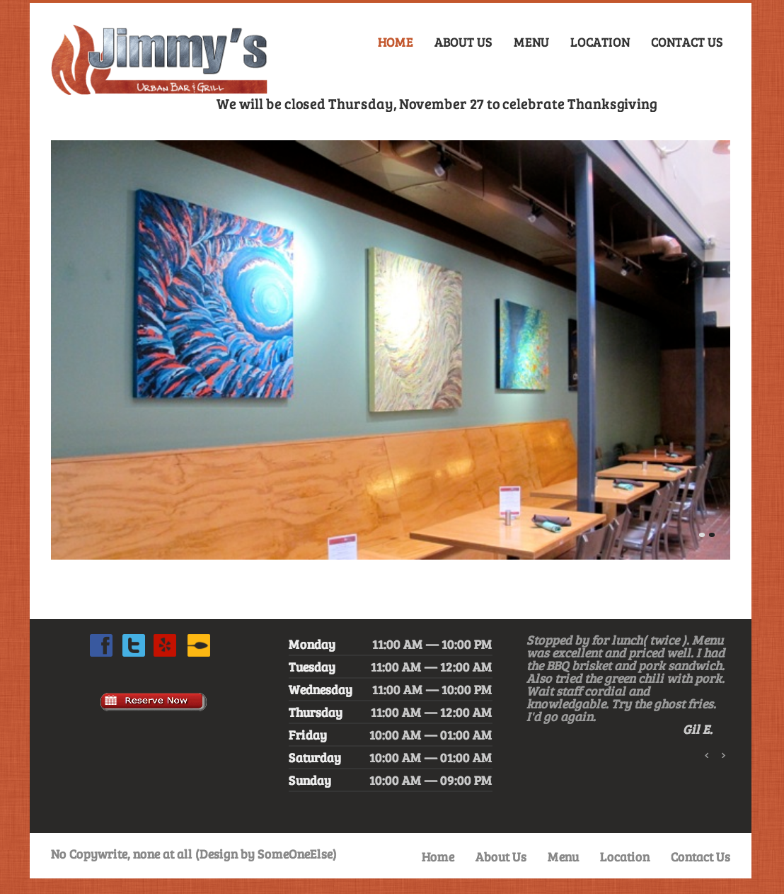

Clone Wars
This week started with us learning about using SQL and Sequel and how use it to provide data dynamically to our sites. We moved from there to learn about basic authentication to protect our sites. We were assigned Clone Wars a 2 week project to copy the front end from a local restaurant and create a fully operational back end to supply all the data needed to create, edit and delete data from the database and provide it to the site. This week we finished with all of the front end and created the back end with sqlite3 and then hosted the site on Heroku. Throughout the project when we went to push to Heroku and found out that Heroku only supports posgreSQL. I was very thankful for this because what we originally used was very generic and could be used on both. This has been really interesting project! With having to endure two weeks and three people, its a lot different than I was expecting but my group seems to work really well together and have all been very productive.
